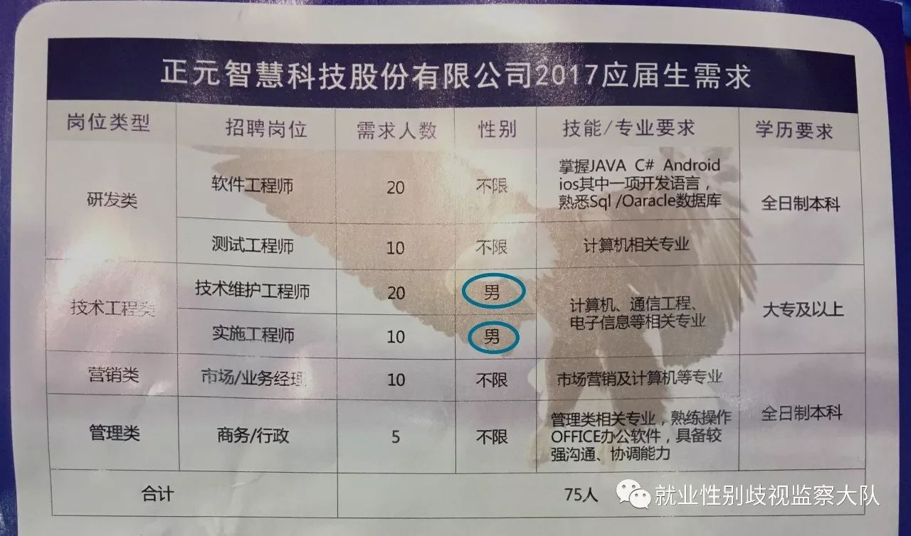

浙江大学玉泉校区于11月12号举办了2018届毕业生秋季综合招聘会，对就业性别歧视十分关注的猪西西和她的小伙伴们赶去了现场观察招聘情况。令人欣慰的是，含有性别限制的文字没有出现在任何一家招聘企业的海报中。
但据另一位在10月末同样参加了浙大玉泉校区招聘会的丸子反馈，歧视性文字确实是在统一的招聘海报中消失了，但在那一场招聘会中却依然有公司在自己印制的传单中标注了“某岗位-建议男/女”。并且在与招聘单位代表交谈的过程中，丸子发现尽管歧视性文字在校招中没有之前那样嚣张，但隐性的歧视观念依然在一些招聘者的脑海中根深蒂固，且被ta们自认为是对女生的一种关怀。

需要澄清的是，无论如何，性别都不应该在求职过程中被当作“硬门槛”，不接受或不建议女性从事高强度工作也不是对女性的关怀而是性别歧视，把自由选择工作环境和工作强度的权利还给女性，这才是性别平等的就业。对此，《劳动法》第12、13条，以及《妇女权益保障法》第22条都写出了明确的规定。因此毫无疑问，就业性别歧视属于违法行为。
但既然那么多用人单位还依然持续着性别歧视并且极度缺乏尊重和保护女性权利的意识，那么我们广大的职场女性和即将步入职场的求职女性可就要增强自己的法律意识了呀！因为就业性别歧视几乎可以发生在女性职业生涯的各个阶段，求职过程中遭受的性别门槛其实只是个开端，随后的职业生涯中更有可能在诸如休产假、升职、身高外貌限制等方面遭受种种的歧视和不平等壁垒，还有性骚扰、潜规则等也都是女性在职场中随时潜藏的暗箭。
结合了丸子之前的观察反馈，猪西西去参加校招会的时候特意带上了《职场女性法律热线宣传册》，发给出席和参加招聘会的女性们，让大家意识到无论是遭到何种性别歧视，也无论是显性的还是隐性的，遭到歧视的女性都是被法律保护的，保持沉默和无边的忍耐可以转化为发声和反抗，而在需要法律咨询或援助的时候，还可以拨打职场女性法律热线获得支持与帮助（注：职场女性法律热线是一个由律师、学者、法律工作者、妇女权益工作者组成的专业的公益团队。热线电话400-007-0074）。
猪西西在散发宣传册的时候感到非常开心，因为她说这个宣传册大概是她发过的最受欢迎的册子了，不但没有遭到任何拒绝，而且女生们还都觉得很实用，很多人都给予肯定说“这个热线很有必要啦”，甚至还想要多拿一些回去带给同学。另外，还有招聘企业的女代表们竟然对热线更是感兴趣的，对此猪西西特别感慨说：“也许这也恰恰可以说明，一旦步入职场，广大女性们对性别歧视的感受也就开始越来越深了吧”。
参加完了校招的西西随后在微博上欣慰的发表了她这一天的观察感受和看到的进步，但是一条来自某校大四学生的微博留言却把她拉回到了另一个极为普遍的现实情况中——留言说学校导员发送在学生群里面的招聘信息几乎都是带有性别限制的，然而当同学向导员提出质疑的时候，导员也只能回复说“这是人家公司的要求”。
那么，面对这样公开性相对较小的招聘信息，我们又将怎样反抗呢？面对缺乏性别平等意识的导员和老师时，我们又将怎样表达自己的诉求呢？就业大队打算从校园招聘入手，监督校招中的性别歧视现象，从而引起高校对就业性别歧视现状自上而下的重视。
那么，如果你在参加的校招中看到了明显的歧视性文字，并且想要对这现象的改变做点儿什么，请拍照片发微博说出你的反馈和你想说的话并@就业性别歧视监察大队。另外，如果你也想去校招现场散发《职场女性法律热线宣传册》，可以输入关键词“职场女性法律热线宣传册”获取册子原图自行打印。当然，在散发册子的时候也可以拍下照片发布在微博上并@074职场女性法律热线。（注：《职场女性法律热线宣传册》为公开宣传册，欢迎且多谢散发~）